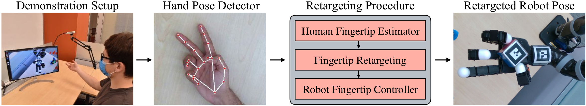
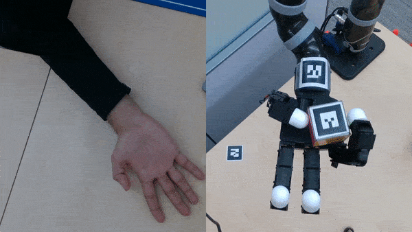

Demonstrations

Unlike previous work, which uses one or multiple depth cameras, we collect demonstrations in real-time from a single RGB camera. We use MediaPipe's hand detector and re-target the human fingertip positions into desired fingertip positions for the AllegroHand. The low-level controller uses inverse kinematics and a PD control to reach the desired locations in 3D space.

Demonstration collection for the rotating task (x4)
Learned Policies

Flipping task (x2)

Spinning task (x8)

Rotating task (x8)
We find a simple nearest neighbors-based immitation approach (INN) is sufficient to solve our tasks. Here we visualize a learned policy for each of the 3 tasks we consider.